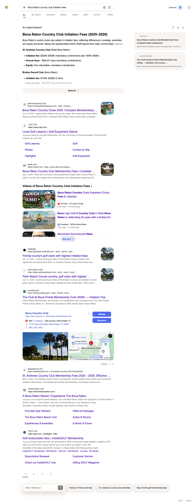
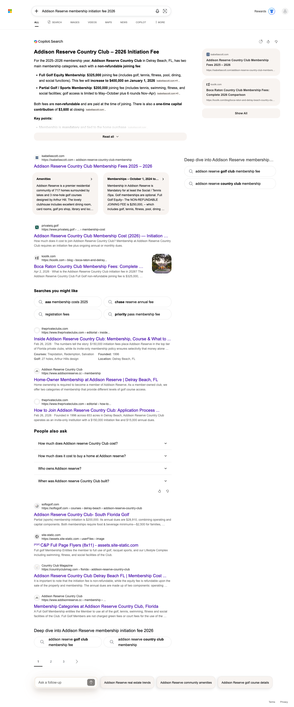
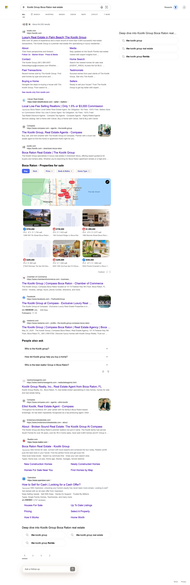
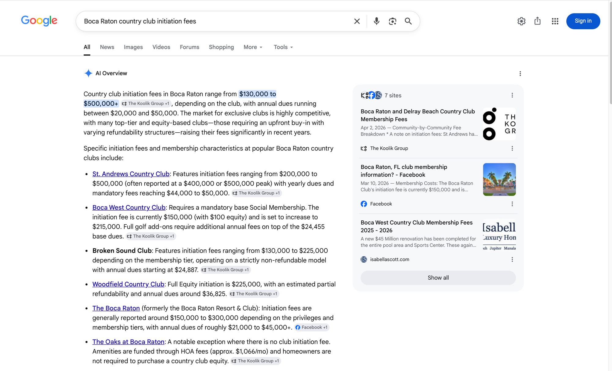
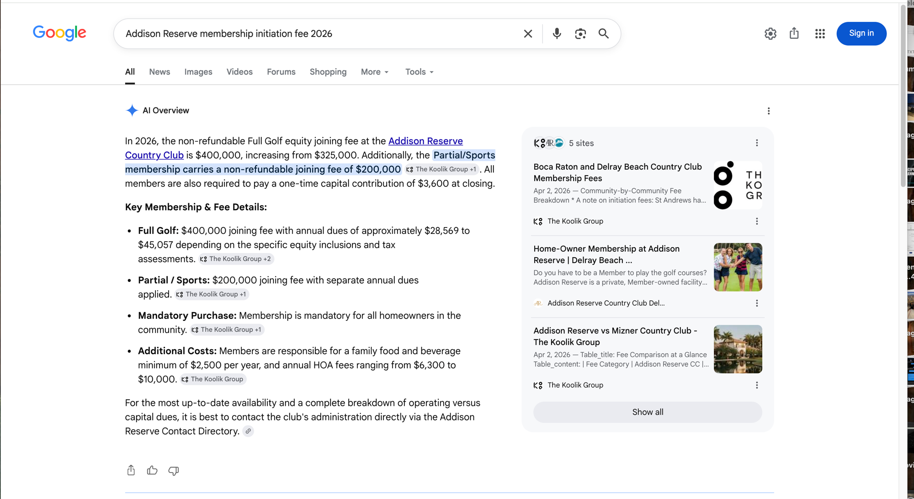
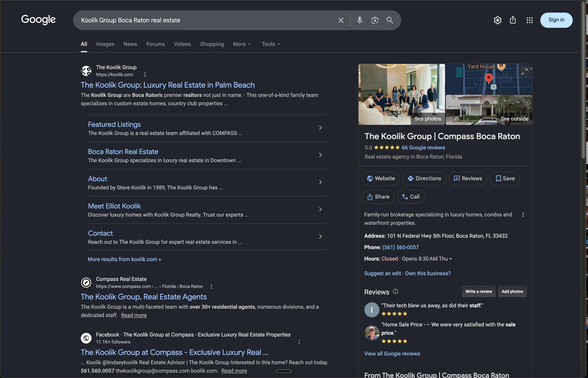

The headline this month is a new surface. In the May 2026 report, ChatGPT carried zero machine-confirmed citations for The Koolik Group, and we disclosed it plainly as a "not yet." In June, ChatGPT cited a Koolik-owned source on nine of the twelve tracked queries. That is the biggest single-surface move in the report: from zero in May to nine queries cited in June, on a surface that showed nothing a month ago.
Perplexity cited Koolik on six of the twelve queries in June. Five were already cited at the June 14 opening check, the Addison Reserve cluster, the country-club fee query, and the brand query, and all five were still cited at the July 5 close, so nothing that was won has been lost. On Bing, Koolik was cited on three queries, the country-club initiation fees, the Addison Reserve membership fee, and the brand query, and all three held from the June 14 open to the July 5 close.
The result is that The Koolik Group now has machine-confirmed AI citations on three surfaces at once (ChatGPT, Perplexity, and Bing). ChatGPT is the new surface: it carried zero machine-confirmed citations in the May report. On top of those three machine-confirmed surfaces, Google's own AI Overview now cites The Koolik Group by name on the country-club fee cluster, documented this month by manual screenshot. The Addison Reserve microsite continues to pull its weight: addisonreserverealestate.com appears as a cited source on the Addison cluster in both ChatGPT and Perplexity. Every citation in this report is tied to either our citation tracking or a structured detection probe, and the evidence tier for each claim is labeled below.
We track twelve buyer-intent queries for the Koolik brand and its five community microsites across ChatGPT, Perplexity, and Bing, plus Google AI Overviews captured manually. A query counts as cited only when our tracking machine-detects a Koolik-owned domain in that engine's answer sources, verified by checks throughout the month, with the month read as its June 14 open against its July 5 close. To keep the picture honest, every month-over-month comparison stays within a single engine.
Last month, the ChatGPT column was empty and we said so. This month it is the standout. ChatGPT cited a Koolik-owned source on nine of the twelve tracked queries in June, up from zero machine-confirmed citations in May. That is the biggest single-surface move in the report.
| Query | Status | Koolik-Owned Source Present |
|---|---|---|
| Boca Raton country club initiation fees | Cited | koolik.com |
| Addison Reserve membership initiation fee 2026 | Cited | koolik.com + addisonreserverealestate.com |
| Addison Reserve country club homes | Cited | koolik.com + addisonreserverealestate.com |
| Koolik Group Boca Raton real estate (brand) | Cited | koolik.com |
| St Andrews Country Club real estate | Cited | koolik.com |
| Woodfield Country Club Boca Raton homes | Cited | koolik.com |
| St Andrews Country Club Boca Raton homes for sale | Cited | koolik.com |
| Addison Reserve Boca Raton homes for sale | Cited | addisonreserverealestate.com |
| Royal Palm Yacht Country Club Boca Raton homes | Cited | koolik.com |
Perplexity cited Koolik on six of the twelve queries in June. Five were already cited at the June 14 opening check and were still cited at the July 5 close, so nothing that was won has been lost. The sixth, the Boca Raton luxury guide, was picked up during the month. Held citations like these are worth more than a spike that fades.
| Query | Status | Koolik-Owned Source Present |
|---|---|---|
| Boca Raton country club initiation fees | Cited | koolik.com |
| Addison Reserve membership initiation fee 2026 | Cited | addisonreserverealestate.com + koolik.com |
| Addison Reserve Boca Raton homes for sale | Cited | addisonreserverealestate.com |
| Addison Reserve country club homes | Cited | addisonreserverealestate.com |
| Koolik Group Boca Raton real estate (brand) | Cited | koolik.com |
Perplexity also cited the Boca Raton luxury real estate complete guide during June (koolik.com), the sixth cited query.
Between the June opening check (June 14) and the closing probe (July 5), Bing held its core three cells. The July 5 probe rendered cleanly on all twelve queries and confirmed koolik.com present on the same three cells cited at the June 14 opening check: country-club initiation fees, the Addison Reserve membership fee, and the brand query. These are machine-confirmed presence checks, backed by the answer-page captures below. We report presence, not position.
| Query | Bing Probe (Jul 5) | Source Present |
|---|---|---|
| Boca Raton country club initiation fees | Cited | koolik.com |
| Addison Reserve membership initiation fee 2026 | Cited | koolik.com |
| Koolik Group Boca Raton real estate (brand) | Cited | koolik.com |



A check means the query was cited by that engine at least once in June; a dash means not yet. Bing reflects the July 5 structured probe, which matches the June 14 opening check. The Google AI Overview column reflects live-browser checks on July 8; where Google produced no AI Overview for a query, the cell is marked no AI answer and left out of scoring.
| Query | ChatGPT | Perplexity | Bing (June close, Jul 5) | Google AI Overview |
|---|---|---|---|---|
| Boca Raton country club initiation fees | ✓ | ✓ | ✓ | ✓ |
| Addison Reserve membership initiation fee 2026 | ✓ | ✓ | ✓ | ✓ |
| Addison Reserve Boca Raton homes for sale | ✓ | ✓ | – | ◦ |
| Addison Reserve country club homes | ✓ | ✓ | – | ◦ |
| Koolik Group Boca Raton real estate (brand) | ✓ | ✓ | ✓ | ◦ |
| St Andrews Country Club real estate | ✓ | – | – | ◦ |
| Woodfield Country Club Boca Raton homes | ✓ | – | – | ◦ |
| St Andrews Country Club Boca Raton homes for sale | ✓ | – | – | ◦ |
| Royal Palm Yacht Country Club Boca Raton homes | ✓ | – | – | ◦ |
| Boca Raton luxury real estate complete guide | – | ✓ | – | ◦ |
| Best place to live in Boca Raton | – | – | – | ◦ |
| Boca West Country Club homes for sale | – | – | – | ◦ |
Reading the matrix (per engine, never mixed). In June, ChatGPT cited Koolik-owned content on 9 of 12 queries, Perplexity on 6 of 12, and Bing on 3 of 12; Google's AI Overview cited Koolik on 2 of 12 (screenshot evidence, shown below). ChatGPT is the surface that opened up, from zero machine-confirmed citations in May to nine queries cited in June. The queries no engine cites yet, Best place to live in Boca Raton and Boca West Country Club homes for sale, plus the microsite gaps on Perplexity, are the July build targets.
Google AI Overviews have no machine-detection lane for these queries, so this surface is documented with manual live-browser captures taken July 8, 2026. Both captures below show The Koolik Group cited by name inside Google's own AI Overview, on the same fee-and-comparison queries that are already earning citations on ChatGPT, Perplexity, and Bing.
Google's AI Overview cites The Koolik Group by name through its attribution chips on six separate claims: the headline fee range of $130,000 to $500,000 and up, and the St. Andrews Country Club, Boca West Country Club, Broken Sound Club, Woodfield Country Club, and The Oaks at Boca Raton bullets. In the capture, the source rail of seven sites shows the Koolik fee guide "Boca Raton and Delray Beach Country Club Membership Fees" as the first visible listing. This AI Overview is substantially built from Koolik content.

Google's AI Overview carries Koolik Group attribution chips on the headline claim and on the Full Golf, Partial or Sports, and Mandatory Purchase bullets. The source rail of five sites includes two Koolik pages: the fee guide and "Addison Reserve vs Mizner Country Club - The Koolik Group".

Every citation claim in this report is backed by machine-logged data, and we keep the evidence tiers separate so you always know how a given claim was verified.
Our tracking checked each query in ChatGPT and Perplexity through the month. A query counts as cited for an engine when the tracking detected a Koolik-owned domain in that engine's answer sources at least once in June. All ChatGPT and Perplexity claims above come from this machine-detected stream.
The Bing probe on July 5 rendered cleanly on all twelve queries and machine-checked each rendered answer for the Koolik-owned domains, matching the June 14 opening check. The three Bing cells are confirmed presence checks, each backed by an answer-page capture.
Perplexity citations come from our daily citation tracking, the machine-detected source of record for that surface, and the Perplexity counts and matrix column reflect those month-long readings. Unlike Bing and Google AI Overviews, Perplexity is reported from the tracking data rather than shown as a screenshot this month.
Two notes on discipline carried over from prior reviews. First, presence is not position: where we say a domain is "cited" or "present," we mean it appears in the AI answer or source set, not that it ranks first. Second, honest denominators: the "owned domains earning citations" count in June is two (koolik.com and addisonreserverealestate.com); the Boca West, RPYCC, St Andrews, and Woodfield microsites do not yet earn citations, and we show them as open opportunities rather than folding them into a win total.
Alongside the AI surfaces, koolik.com continues to carry the largest classic-search footprint among the BLOK Total Search clients with Search Console connected. The figures below are from Google Search Console for calendar June, June 1 to 30, 2026, with the prior month (May 1 to 31) shown alongside for month-over-month context.
| Metric | May 2026 | June 2026 | Month over month |
|---|---|---|---|
| Clicks | 1,401 | 1,315 | down about 6% |
| Impressions | 120,498 | 97,913 | down about 19% |
| Average CTR | 1.16% | 1.34% | up |
| Average position | 7.1 | 8.4 | slipped (lower is better) |
Both windows are calendar months (May 1 to 31 and June 1 to 30, 2026), pulled from Google Search Console.
On the brand query, koolik.com holds the top visible organic position with five sitelinks, next to the team's 5.0-star, 66-review Business Profile, up from 64 reviews in the May report (capture, July 8, 2026).

You asked us to begin building the association between The Koolik Group and real estate investing ahead of your new investment division. That is July's content mission, and June's data tells us exactly how to win it.
The AI engines already cite koolik.com daily, so investment content published there starts earning authority immediately. Nothing links to the new landing page until the division brand is final, exactly as you asked; when it launches, internal links transfer the authority to it.
Google's AI Overview on country club fees is built from your structured, data-heavy guide. July's investment content uses that same format on the topics you named: investment properties, rental strategy, 1031 exchanges, cash flow, and market opportunities, each with Boca-specific numbers and comparison tables.
Boca Raton Investment Property Guide 2026; rental and leasing rules in Boca Raton's country club communities; 1031 exchanges for South Florida investment property; the cash-flow math on a Boca Raton rental; Boca Raton versus Delray Beach for investors; and building a South Florida portfolio.
Investment questions join your daily citation tracking now, so the July report shows the baseline and August shows the association forming, the same way this report tracked the fee cluster onto four surfaces.